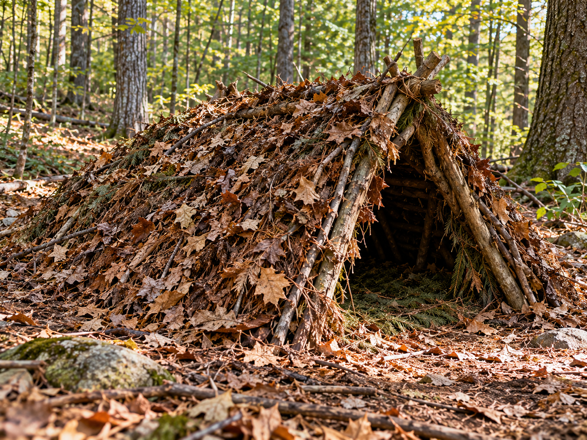

Debris Hut

A debris hut is a small shelter made mainly from natural materials.
What It Is
A debris hut uses branches to create a basic frame. Leaves and other dry natural materials can cover the frame.
When to Use It
It can provide basic protection when a normal tent or tarp is not available.
How It Works
A strong branch forms the main support. Smaller branches are placed along the sides. Dry leaves and other debris can then cover the frame.
Materials Needed
- Strong branches
- Smaller sticks
- Dry leaves
- Other natural covering materials
Source
Outdoor preparation and shelter information: National Park Service - Ten Essentials